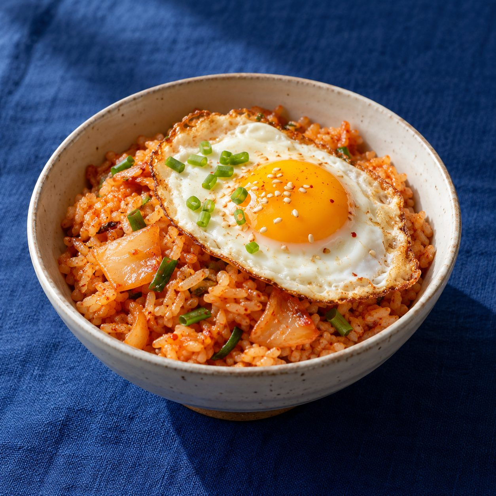

봄
나물이 돋고 낮이 길어지는 때에는 산뜻한 비빔밥과 봄 채소를 곁들인 면 요리처럼 향이 살아 있는 한 끼를 살펴봅니다.

TONIGHT'S PICKYOUR DINNER PICKS
같은 취향, 조금씩 다른 세 가지. 가장 끌리는 메뉴를 골라주세요.
하트는 메뉴별 선호 반응으로 집계돼요.
DINNER DECIDED
98종 메인 메뉴를 각각 음식 사진이 담긴 포토카드로 보여드려요.
HOW WE PICK DINNER
같은 여름이라도 더운 날과 비 오는 날의 저녁은 달라야 하니까요. 이 사이트는 계절을 큰 흐름으로, 오늘 날씨를 지금의 체감으로 보고 메뉴 후보를 좁힙니다.
나물이 돋고 낮이 길어지는 때에는 산뜻한 비빔밥과 봄 채소를 곁들인 면 요리처럼 향이 살아 있는 한 끼를 살펴봅니다.
더위가 느껴지면 냉면·메밀면·콩국수 같은 차가운 메뉴를 우선합니다. 여름 선택만으로 뜨거운 국밥을 밀어 올리지 않도록 실제 날씨를 따로 반영합니다.
선선한 바람과 함께 구이, 전골, 덮밥처럼 맛이 또렷하고 든든한 메뉴를 넓게 살펴봅니다. 비가 오면 전이나 부침개도 후보가 됩니다.
추운 날에는 곰탕·설렁탕·순대국밥 같은 국물 메뉴와 따뜻한 전골을 먼저 찾습니다. 맵기와 담백함은 선택한 맛에 맞춰 조정합니다.
계절과 날씨가 음식의 온도와 분위기를 정하고, 당기는 맛은 매콤함·기름지고 고소함·담백함 중에서 후보를 더 좁힙니다. 마지막 기분 선택은 앞선 조건을 뒤집기보다 비슷한 결 안에서 메뉴를 조금 다르게 고르는 데 씁니다. 예를 들어 더운 날에는 차가운 면을 우선하고, 스트레스가 쌓인 날의 매콤한 후보도 그 계절과 날씨에 어울리는 음식군에서 찾습니다.
추천은 실시간 기상 정보를 가져오지 않습니다. 사용자가 고른 계절과 체감 날씨를 기준으로 98종의 메인 메뉴 풀에서 세 가지를 보여주며, 식당별 조리법·재료·계절 판매 여부는 달라질 수 있습니다.
계절별 메뉴와 추천 기준 자세히 보기 추천 메뉴 98종 전체 목록 둘러보기PARTNERSHIP
서비스 제휴와 협업 제안을 보내주세요. 남겨주신 내용은 이메일로 전달됩니다.
COMMUNITY
저녁 메뉴 이야기
추천 메뉴에 대한 의견이나 오늘의 저녁 이야기를 나눠보세요. 댓글은 공개될 수 있으며 개인정보나 민감한 내용은 적지 말아 주세요. 부적절한 댓글은 운영자가 숨기거나 삭제할 수 있습니다. 댓글과 개인정보 안내